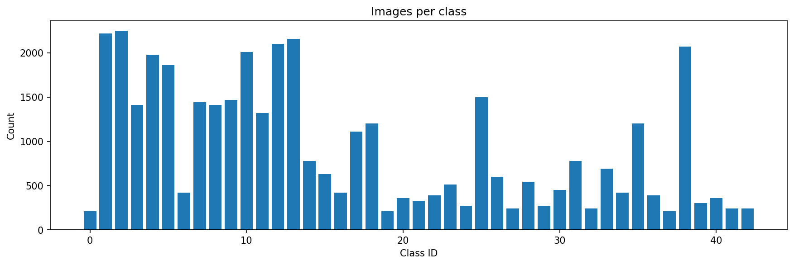
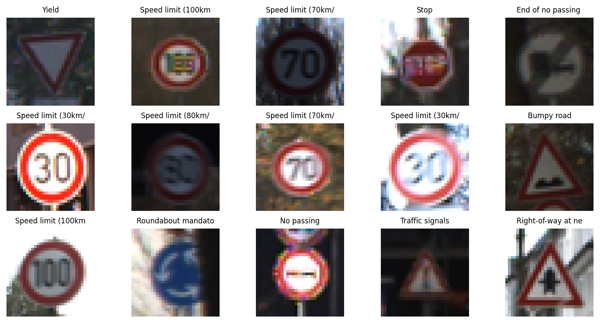
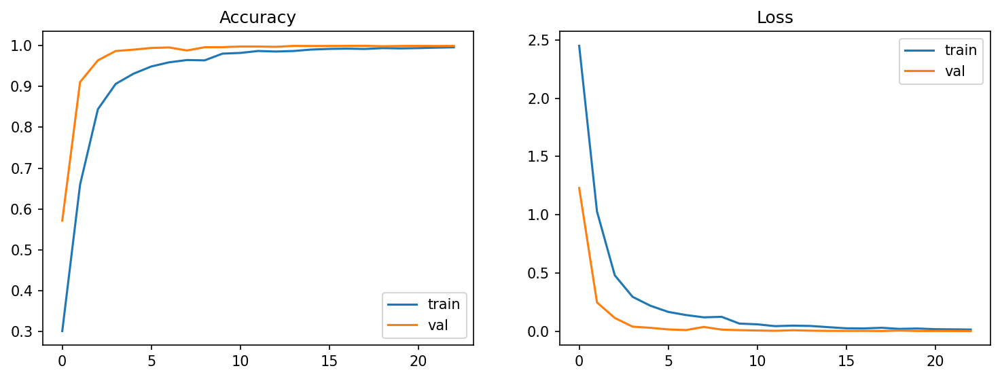
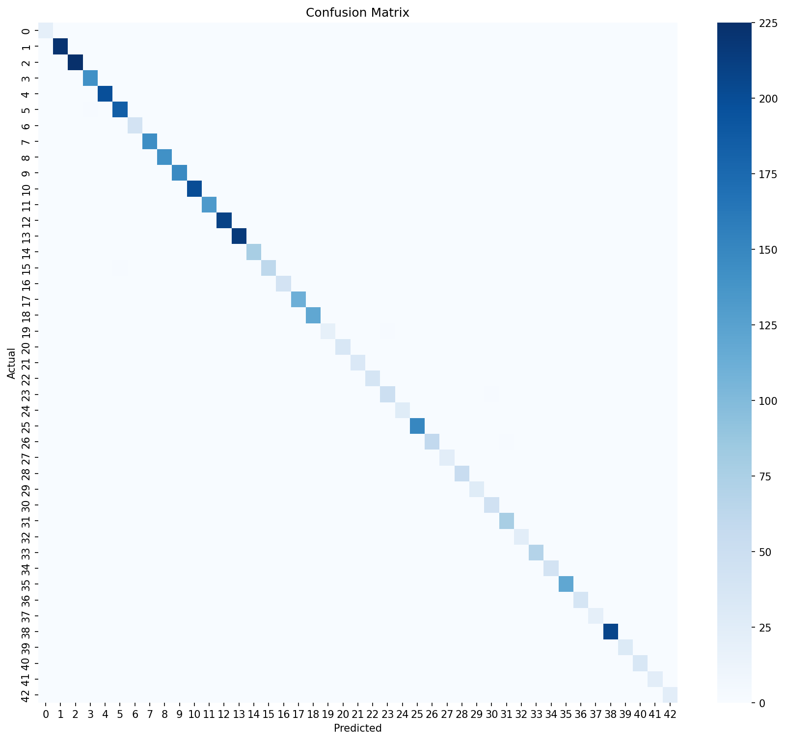

Live Demo
Upload a photo of a traffic sign (ideally a close, centered crop). The model runs locally in your browser and no image is uploaded anywhere.
Loading model...
Prediction
Dataset & Code Details
Dataset
- Name: GTSRB (German Traffic Sign Recognition Benchmark)
- Type: Secondary dataset, downloaded from Kaggle
- Size: 39,209 training images, 43 classes
- Split used: 80% train, 10% validation, 10% test
- Preprocessing: resize to 32x32 RGB, scale pixels to 0-1
Model & Training
- Model: custom CNN, 3 blocks of 2x(Conv + BatchNorm), MaxPool, Dropout, then Dense(256) and Dense(43, softmax)
- Framework: TensorFlow / Keras
- Optimizer: Adam, loss: sparse categorical cross-entropy
- Augmentation: small rotation, zoom and shift (no flips, since flipping changes a sign's meaning)
- Training: up to 25 epochs with early stopping, on a Colab T4 GPU
- Weights: saved in the GitHub repo under
model/(about 10 MB)


Results
99.87%Test accuracy
43Classes
3,921Test images


Project Links
- Project Report add link
- Presentation add link
- YouTube Video add link
- GitHub Repository github.com/muhammadazghan/traffic-sign-recognition
- LinkedIn Post add link